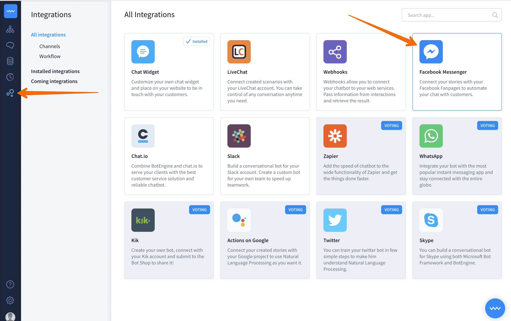
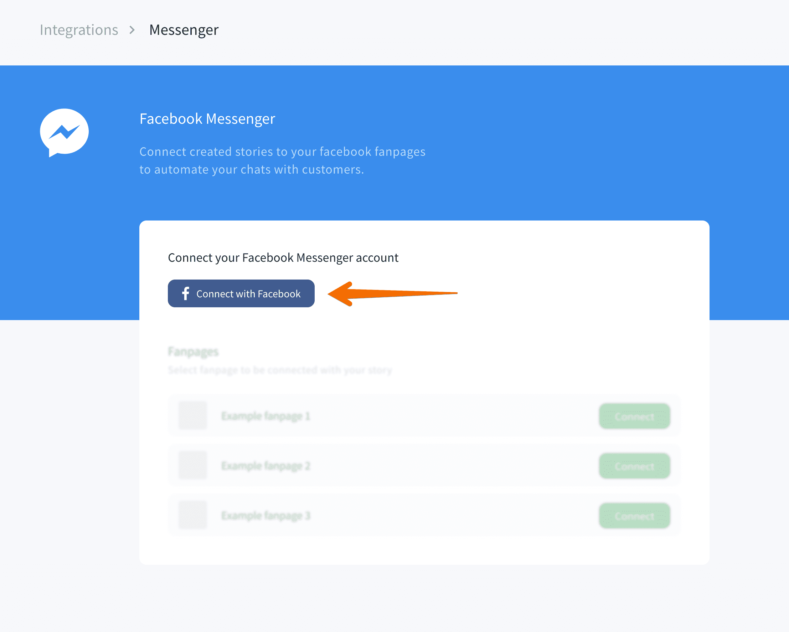
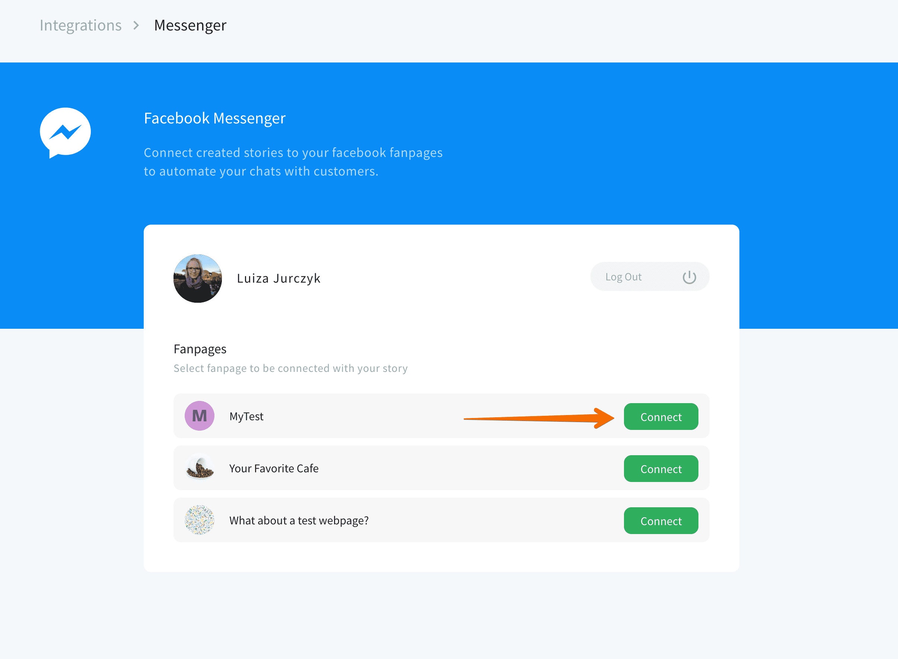
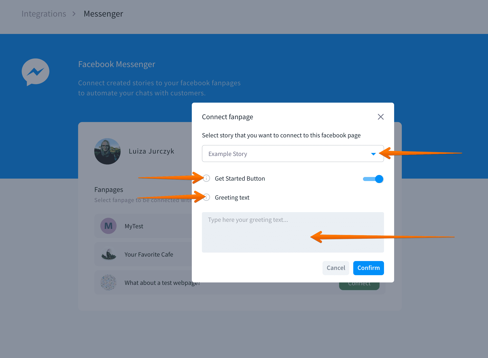
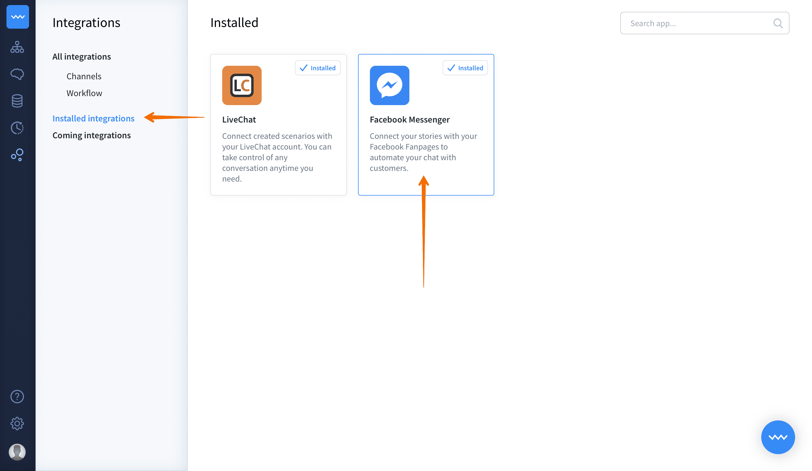
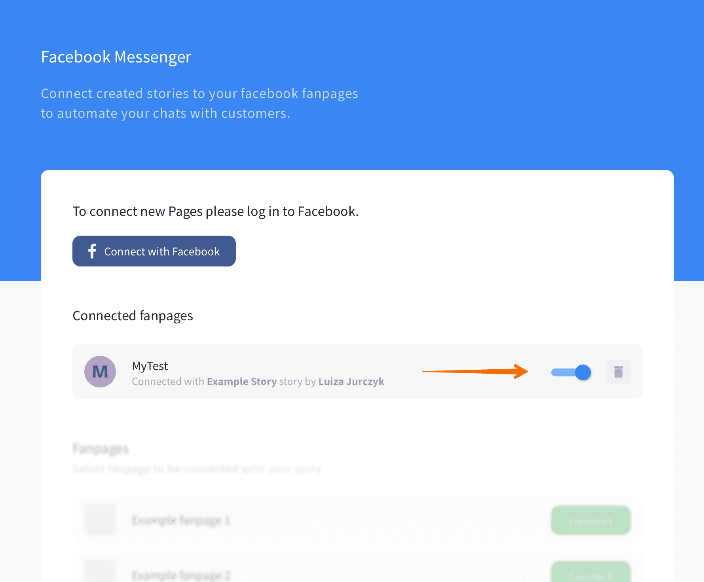

Creating a Messenger bot gives you access to over 1.2 billion of the Facebook’s app.
By integrating BotEngine with your Facebook fan page, you can significantly increase the volume of daily conversations with your followers and customers and put more focus on those, that require personal insight.
Facebook Messenger integration allows you to quickly publish your bots on your Facebook fan pages. You don’t need a Facebook application to run this integration.
What can your Messenger bot do
- Greet your visitors with a personalized
welcomemessage. - Use rich messages designed only for Facebook Messenger.
- Save your customers from waiting for the reply. The bot always answers instantly.
- Personalize messages using the username, knowing the language and much more. Check out the full list of attributes available for Messenger here.
Before to start
- Remember that you can integrate your bots with maximum 10 fan pages.
- One fan page can be managed by only one chat bot.
- We recommend you to set up your fan page before creating your bot.
- BotEngine has many cool features designed only for Messenger.
You can personalize your Messenger Bot using default attriutes. To do that, tyoe the attribute name within curly brackets
user_first_name. You can find the full list of available attributes here.
How to integrate your bot with Facebook Messenger
- Go to Integrations and select Facebook Messenger. 
- Click Connect with Facebook and log in to your Facebook account to be able to integrate your chatbot with Messenger. 
- Select the fan page that you won’t to be served by your chatbot. 
- Configure the integration and click Confirm when you’re ready.

- Select the story — decide which bot scenario will be connected to this story.
- Get started button — when this option is on, new users will see a button that will trigger the welcome interaction when clicked.
- Greeting text — decide the welcome message.
- The integration is ready. From now Messenger Bot greets and talks with everyone that starts the chat with integrated fan page.
Note that transferring your client to a human agent and muting the bot isn’t possible with this integration.
How to disable/delete active Facebook integration
- Go to the Integrations and select Active Integrations. Select Facebook Messenger. 
- Here you can see your all active Messenger bots. Toggle the button next to the active integration to turn the bot off. You can also delete it completely by clicking on the remove button. 
Bot responses available for Messenger Bot
Facebook Messenger supports most of BotEngine responses and actions. Check out the list of possible responses here.
Messenger Bot attributes
The Messenger integration saves attributes, such as avatar, name or URL, automatically. That allows you to create more personalized bot responses and adds.
You can use attributes directly in your response or pass them to your database. To use a parameter in your response, use the curly brackets. To know how to do it, check out the following example.
Hi default_user_name, how can I help you?
The message will be displayed on the welcome screen of the chat for the people that are interacting with your bot for the first time.
Messenger Bot Responses
With Facebook Messenger you can use many bot responses designed specially for this platform. Go to the compatibility table to check out which responses work with this integration.
Tips and Tricks
- You can set
welcomein postback to invoke Default Welcome interaction. You can also invoke any other root interaction. Remember to set this postback in the chosen interaction in the User Says section. - To turn off the bot, use the switch. Now your bot isn’t active and you can reply to all incoming messages.
Testing
Now you can test your bot in Messenger. The conversation history is always available in the archives. Find them using with the integration filter.
See Also
Read more about Messenger Greetings.